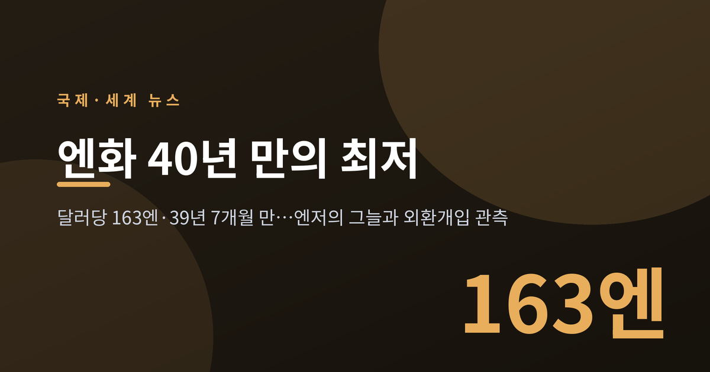
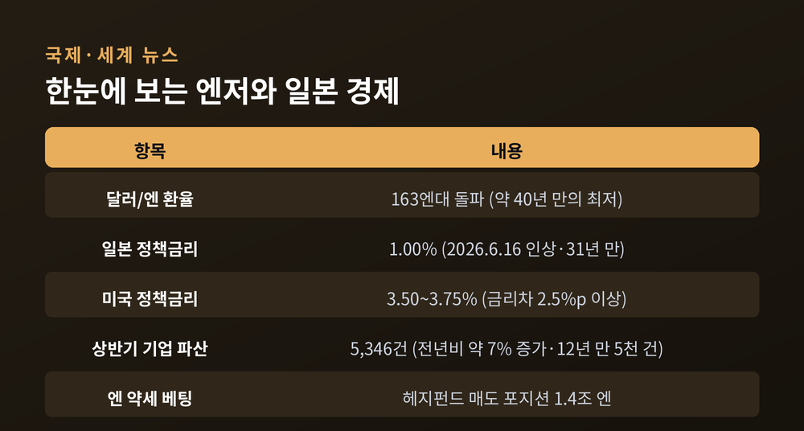
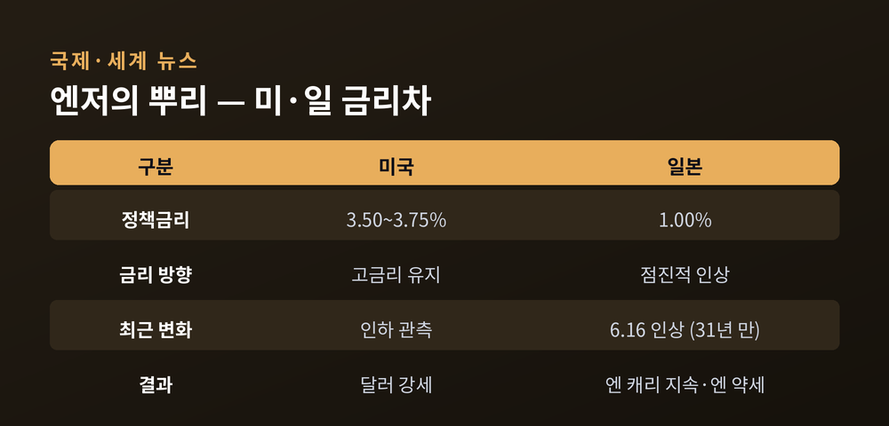
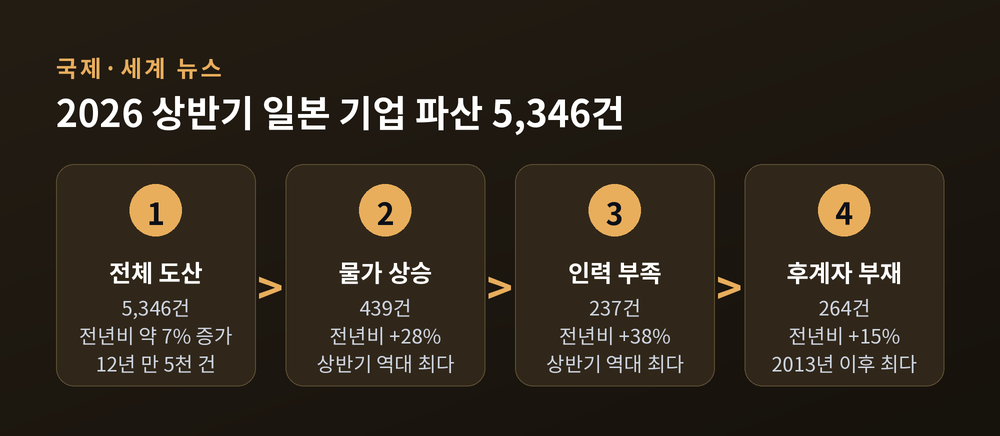
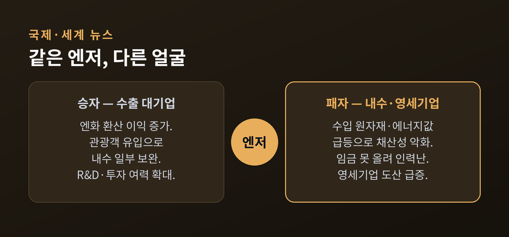
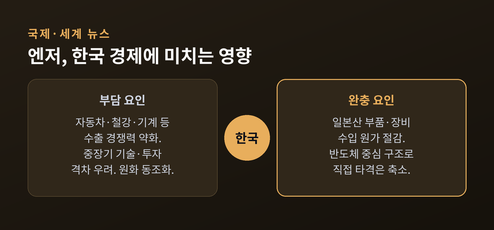

이번 글에서는 40년 만의 최저로 밀려난 엔화 이야기를 정리해 보겠습니다.
같은 시기 일본에서는 상반기 기업 파산이 12년 만에 5천 건을 넘어섰습니다.
환율 숫자 하나가 왜 중요한지, 그 그늘은 누구에게 드리우는지 차분히 짚어 보겠습니다.

2026년 7월 22일, 도쿄 외환시장에서 엔화가 달러당 163엔대를 뚫었습니다.
1986년 12월 이후 처음입니다. 약 39년 7개월, 사실상 40년 만의 최저 수준입니다.
엔저는 올해 내내 이어졌습니다. 4월에 이미 160엔을 넘었고, 6월 말에는 162엔을 뚫었습니다.
그리고 7월, 마침내 163엔까지 밀렸습니다.
숫자만 보면 실감이 어렵습니다. 조금 풀어 보겠습니다.
같은 100만 엔짜리 일본 상품을, 달러로는 예전보다 훨씬 싸게 살 수 있게 됐다는 뜻입니다.
일본 물건이 세계 시장에서 그만큼 싸졌다는 신호이기도 합니다.

엔 약세의 뿌리는 미국과 일본의 금리 차이입니다.
일본은행은 6월 16일 정책금리를 0.75%에서 1.00%로 올렸습니다.
정책금리가 1% 선에 들어선 것은 1995년 이후 31년 만입니다.
그런데도 엔저는 꺾이지 않았습니다. 이유는 간단합니다.
미국 금리는 여전히 3.50~3.75% 수준입니다. 격차가 2.5%포인트를 넘습니다.
돈은 이자를 더 주는 쪽으로 흐릅니다.
싼 이자로 엔을 빌려 더 높은 이자의 달러 자산에 넣는 '엔 캐리 트레이드'가 계속되는 배경입니다.
예전엔 일본이 금리를 올리면 엔이 강해진다고 봤습니다.
지금은 다릅니다. 올려도 격차가 크면 엔은 계속 약합니다.

금리차만이 전부는 아닙니다. 두 가지가 더 얹혔습니다.
하나는 정치입니다. 다카이치 사나에 내각의 확장재정 기조가 시장을 불안하게 만들었습니다.
식료품 소비세 인하 같은 정책이 이어지면서, 국채가 더 풀릴 것이라는 우려가 커졌습니다.
국채가 늘면 엔은 약해집니다. 시장은 그렇게 읽었습니다.
한 시장 분석가는 "다카이치노믹스가 미지의 영역에 들어섰다"고 표현했습니다. 재정을 풀어 성장을 꾀하지만, 그 대가로 통화 신뢰가 흔들리는 딜레마입니다.
다른 하나는 투기입니다. 6월 말 기준 헤지펀드의 엔 약세 베팅은 1조 4천억 엔 규모로 불었습니다.
2024년 여름, 엔 캐리 대청산이 벌어지기 직전 이후 가장 큰 규모입니다.
베팅이 한쪽으로 쏠리면 위험도 함께 쌓입니다.
정책이 바뀌거나 개입이 들어오면, 쏠렸던 포지션이 한꺼번에 풀리며 시장이 크게 출렁일 수 있습니다.
엔이 밀릴 때마다 나오는 말이 있습니다. "외환시장 개입."
가타야마 사쓰키 재무상은 "필요하면 언제든 단호히 대응하겠다"고 여러 차례 경고했습니다.
말로 그치지도 않았습니다. 일본은 5월 27일까지 한 달간 역대 최대인 11조 엔 규모로 엔을 사들였습니다.
과거에도 2024년 7월, 2026년 4월에 엔 매수 개입을 단행한 바 있습니다.
문제는 효과입니다. 163엔을 뚫던 날, 재무상의 경고에도 엔은 거의 꿈쩍하지 않았습니다.
구두 개입이 무뎌졌다는 평가가 나옵니다.
엔화와 국채가 나란히 약해지면서, 일각에서는 "통화 위기 경보"라는 표현까지 나왔습니다.
개입은 흐름을 잠시 늦출 수는 있어도, 금리차라는 큰 물줄기를 되돌리기는 어렵습니다.
환율의 그늘은 통계로 드러났습니다.
도쿄상공리서치에 따르면, 2026년 상반기 일본 기업 파산은 5,346건입니다.
전년 같은 기간보다 약 7% 늘었습니다.
상반기 기준으로 5천 건을 넘은 것은 2014년 이후 12년 만입니다. 건수로는 13년 만의 최다입니다.
무너진 곳은 대부분 작은 기업이었습니다.
종업원 10명 미만의 영세기업이 4,844건, 전체의 약 90%를 차지했습니다.
원인을 뜯어보면 엔저의 얼굴이 보입니다.
물가 상승이 부른 파산이 439건으로 28% 늘었습니다.
일손 부족에 따른 파산은 237건으로 38% 뛰었습니다.
후계자가 없어 문을 닫은 곳도 264건에 이릅니다.
엔저로 수입 원자재와 에너지 값이 오르는데, 영세기업은 그 비용을 제품값에 얹기 어렵습니다.
"월급 올려줄 돈도 없다"는 말이, 인력난과 폐업으로 이어졌습니다.

엔저는 한쪽에만 그늘을 드리우지 않습니다. 양면을 봐야 균형이 잡힙니다.
수출 대기업에는 이익입니다.
도요타 같은 회사는 달러로 번 돈을 엔으로 바꾸면 이익이 커집니다.
싸진 일본을 찾는 외국인 관광객도 늘어, 내수의 한 축을 떠받칩니다.
반면 수입에 기대는 내수·중소기업에는 부담입니다.
원자재와 부품값이 오르니 채산성이 나빠집니다.
물가를 못 따라가는 임금에 가계 소비도 움츠러듭니다.
같은 환율이 누군가에게는 순풍, 누군가에게는 역풍입니다.

바다 건너 이야기로만 볼 수 없습니다. 한국 경제에도 파장이 닿습니다.
자동차, 철강, 기계, 석유화학, 조선 기자재. 일본과 세계 시장에서 맞붙는 업종입니다.
엔이 싸지면 일본 제품의 가격 경쟁력이 올라갑니다. 그만큼 한국 수출은 힘겨워집니다.
중장기 우려도 있습니다. 일본 기업이 불어난 이익을 연구·개발과 설비에 재투자하면, 격차는 기술력으로 번질 수 있습니다.
물론 반대편 효과도 있습니다. 일본산 부품·장비를 들여오는 기업에는 원가를 낮추는 요인입니다.
반도체 중심으로 수출 구조가 바뀌면서, 엔저의 직접 타격이 예전보다 줄었다는 분석도 있습니다.
다만 엔 약세가 원화 약세로 옮아붙는 '동조화'는 여전히 지켜봐야 할 대목입니다.

세 가지를 함께 보면 흐름이 읽힙니다.
첫째, 일본은행의 금리 인상 속도입니다. 노무라증권은 6개월마다 0.25%포인트씩 올려 1.5%까지 갈 것으로 봅니다.
둘째, 실제 개입의 시점과 강도입니다. 말이 아니라 행동이 나올 때 시장은 반응합니다.
셋째, 미국 금리의 방향입니다. 미국이 금리를 내리면 격차가 좁아지고, 엔은 숨을 돌릴 수 있습니다.
엔저는 단순한 환율 뉴스가 아닙니다. 금리와 재정, 정치와 투기가 얽힌 하나의 큰 그림입니다.
정리하면 이렇습니다.
엔화는 40년 만의 바닥에서, 일본 안에서는 영세기업의 폐업으로, 바다 건너에서는 한국 수출의 부담으로 번지고 있습니다.
"환율은 숫자가 아니라, 누군가의 생계다."
40년 만의 저점이 남기는 질문은 하나입니다. 이 흐름은 과연 어디에서 멈출 것인가.
그 답은 아직 시장도 알지 못합니다.
※ 이 글은 정보 제공을 위한 해설이며, 특정 자산이나 통화에 대한 투자 권유가 아닙니다. 환율·시장 전망은 여러 변수에 따라 달라질 수 있습니다.